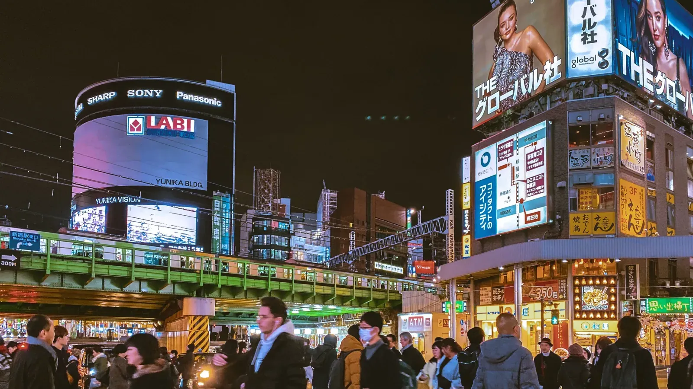

La risposta breve
Per un primo viaggio dormi a Shinjuku: è il nodo di trasporti più grande, ha hotel per ogni budget ed è vivace fino a tardi (la foto in alto è l'uscita est). Se preferisci qualcosa di più tranquillo e centrale, scegli Ginza o Tokyo Station, perfette se prenderai lo Shinkansen. Per un'atmosfera tradizionale e prezzi più bassi, scegli Asakusa o Ueno. Qualunque zona scegli, la vera regola è una: stare vicino a una stazione, meglio se della linea JR Yamanote.
La regola della Yamanote
La linea JR Yamanote è un anello che collega Shinjuku, Shibuya, Harajuku, Tokyo Station, Akihabara, Ueno e Ikebukuro. Stare vicino a una delle sue stazioni significa raggiungere quasi tutto con un solo treno e senza cambi. Un hotel a 15 minuti da una piccola stazione di una linea secondaria può sembrare più economico, ma lo ripaghi in tempo ogni giorno. Pagare con una carta IC come Suica o PASMO rende ogni viaggio semplicissimo.
Shinjuku: la base migliore per la prima volta
La stazione più trafficata del mondo, con linee JR, metro e private, e treni o bus diretti per Hakone, il Monte Fuji e gli aeroporti. Intorno: i neon dell'uscita est, i minuscoli bar di Golden Gai e Omoide Yokocho, i grandi magazzini, l'osservatorio gratuito del Palazzo del Governo Metropolitano e il giardino Shinjuku Gyoen. È vivace ma molto sicura; scegli solo un hotel lontano dal cuore di Kabukicho se vuoi notti tranquille.
Ideale per: chi viene la prima volta, gite in giornata, vita notturna. Confronta gli hotel a Shinjuku.
Shibuya: giovane ed energica
Il famoso incrocio di Shibuya, Shibuya Sky, negozi, caffè e locali, con Harajuku e Omotesando a pochi passi. Buoni collegamenti, anche se meno treni diretti per le gite rispetto a Shinjuku. Gli hotel in genere sono un po' più cari e più nuovi.
Ideale per: shopping, viaggiatori giovani, chi ama il design.
Ginza e Tokyo Station: centrali e tranquille
Ginza è vie eleganti dello shopping e serate calme; la vicina Tokyo Station è da dove partono gli Shinkansen per Kyoto e Osaka, e i giardini del Palazzo Imperiale sono a pochi passi. È la zona più pratica se arrivi da Haneda o Narita e riparti in treno ad alta velocità. Vita notturna più calma e prezzi medio-alti.
Ideale per: coppie, famiglie, chi prende lo Shinkansen. Vedi gli hotel a Ginza.
Asakusa e Ueno: tradizione e buoni prezzi
Asakusa è la Tokyo antica: il tempio Senso-ji, la via Nakamise, i risciò e la vista sullo Skytree oltre il fiume. Tanti hotel in stile ryokan e ostelli a buon prezzo, e le linee Keisei/Toei arrivano a Narita e Haneda. La sera è tranquilla ed è un po' lontana da Shinjuku e Shibuya (30–40 minuti).
Ueno è sulla linea Yamanote, con i musei, il parco (bellissimo per i ciliegi in fiore), il mercato di Ameyoko e il Keisei Skyliner per Narita. Pratica e spesso più economica della parte ovest.
Ideale per: budget, famiglie, chi arriva a Narita.
Altre zone da conoscere
- Ikebukuro: grande nodo della Yamanote, hotel più economici; meno affascinante ma molto pratica.
- Akihabara: elettronica, anime e videogiochi; centrale sulla Yamanote, buon rapporto qualità-prezzo.
- Roppongi: musei d'arte e vita notturna, clima internazionale, meno comoda per le gite.
- Odaiba o zona Tokyo Disney: solo se vai a Disney, altrimenti troppo lontane da tutto.
Confronto rapido
| Zona | Trasporti | Prezzo | Atmosfera | Ideale per |
|---|---|---|---|---|
| Shinjuku | Ottimi | ¥¥ | Vivace, neon | Primo viaggio, gite |
| Shibuya | Molto buoni | ¥¥¥ | Giovane, di tendenza | Shopping, locali |
| Ginza / Tokyo Stn | Ottimi | ¥¥¥ | Elegante, calma | Shinkansen, coppie |
| Asakusa | Buoni | ¥ | Tradizionale, tranquilla | Budget, cultura |
| Ueno | Molto buoni | ¥–¥¥ | Locale, pratica | Narita, musei |
Consigli per prenotare
- Le camere giapponesi sono piccole: una doppia in un business hotel può essere di 11–15 m². Controlla la metratura e la larghezza del letto (una "semi-double" è stretta per due).
- Il check-in di solito è dalle 15:00, ma quasi tutti gli hotel tengono i bagagli gratis se arrivi prima.
- Sulla maggior parte delle camere si aggiunge una piccola tassa di soggiorno a persona e a notte, spesso non inclusa nel prezzo online.
- Prenota con largo anticipo per la fioritura dei ciliegi (fine marzo–inizio aprile), la Golden Week (fine aprile–inizio maggio) e Capodanno.
- Poi vai a Kyoto? Stare vicino a Shinagawa o Tokyo Station fa risparmiare tempo il giorno dello Shinkansen.
Organizza il soggiorno a Tokyo
Alcuni link sono link affiliati: prenotare tramite essi non ti costa nulla in più e aiuta a mantenere 687 gratuito.
Tokyo, organizzata a partire dalla tua stazione.
In 687 Japan imposti il tuo hotel come base e ogni giornata viene costruita intorno a quello, con i treni, la mappa offline, l'aiuto per i menu in inglese e le allerte terremoti. Se cambiano i piani, NOW ricostruisce il resto della giornata.
Fonti
- GO TOKYO – guida turistica ufficiale di Tokyo
- JR East – informazioni sui treni
- Tokyo Metro (ufficiale)
- Ente nazionale del turismo giapponese
Verificate su questi siti ufficiali a novembre 2026. Prezzi e regole possono cambiare: controlla sempre prima di partire.